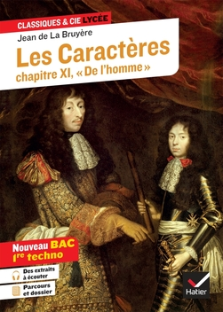
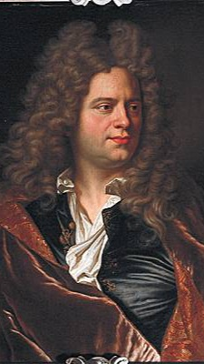

Les caractères
-La Bruyère-
1688
La comédie sociale

Auteur
La Bruyère
Né en 1645, Jean de La Bruyère est un écrivain du XVIIème siècle, auteur d’une œuvre unique, Les Caractères, qui connaît un succès retentissant dès sa publication en 1688 et connaît plusieurs éditions augmentées jusqu’en 1696. Moraliste du Grand siècle qui peint l’âme humaine, il s’inscrit dans le sillage de Montaigne, Pascal et La Rochefoucauld. Dans la célèbre querelle des Anciens et des Modernes, il prend parti pour les Anciens dont il prône l’imitation.
Resume
Dans De la société et de la conversation (livre V), La Bruyère évoque l’art d’être en société. Il dresse le portrait de personnages contraires aux valeurs de civilité, de politesse et d’honnêteté. Dans Des biens de fortune (livre VI), le moraliste met l’accent sur le rôle de l’argent qui déstabilise l’ordre social et crée des différences de fortune ne reposant pas sur le mérite. Dans De la ville (livre VII), il dépeint la ville comme un théâtre où tout est caché, masqué. Les hommes sont rattachés les uns aux autres par le « regard », instrument de comparaison, de malveillance et de moquerie. Dans De la Cour (VIII), La Bruyère présente le tableau satirique de la cour de Louis XIV. Il s’agit d’une société superficielle, soumise au culte des apparences. Il décrit un monde impitoyable où les destinées sont soumises aux lois du hasard et où le destin d’un favori peut être brisé soudainement. 3/6 Dans Des Grands (IX), le moraliste dresse le portrait des hommes de la haute noblesse, orgueilleux, vaniteux, imprévisibles et corrompus. L’auteur oppose le rang social et le mérite. Dans Du Souverain ou de la République (livre X), il critique la guerre et adresse des conseils aux dirigeants et au roi.
Personnages
- Acis : Acis, par exemple, est un courtisan, précieux, que La Bruyère critique ouvertement. Il dénonce son ridicule, ses manies, ses faux-semblants.
- Arrias : Arrias est un autre personnage, très présomptueux, arrogant, qui croit tout connaître et se vante sans cesse. Il sera également très vivement décrié par La Bruyère dans son texte.
- Pamphile :Pamphile, quant à lui, est un personnage qui se veut à la fois généreux et altruiste, mais que La Bruyère critique ouvertement. Il s’agirait en réalité plutôt d’un personnage qui se prend au sérieux, qui vit dans le superficiel et l’éphémère, et qui oublie facilement les vraies valeurs. La Bruyère insiste sur les artifices utilisés par le personnage pour donner le change, et montre qu’il ne faut pas se laisser prendre par le jeu des apparences.
Themes
Quels sont les thèmes importants dans les livres V à X des Caractères de La Bruyère ?
• L’honnête homme:
Dans Les Caractères, La Bruyère fait le portrait de l’honnête homme (idéal de l’homme au XVIIème siècle) : un homme mesuré, convenable, cultivé, qui n’essaie pas de paraître pour ce qu’il n’est pas. Ainsi, les portraits satiriques sont à lire comme des contre-modèles de l’honnête homme. Par exemple, Théodecte (V, 12) est trop théâtral. Il veut être le centre de tout et a des gestes et des tons de voix excessifs, qui manquent de discrétion. Narcisse (VII,12) ne se soucie que de lui-même. L’honnête homme, au contraire, se caractérise par sa modestie, sa mesure et sa maîtrise des relations sociales et de la conversation (livre V, « De la société et de la conversation »).
• Le théâtre du monde:
La Bruyère représente le monde comme un théâtre, thème traditionnel dans la littérature moraliste du XVIIème siècle. Le monde est théâtral car chacun met en scène sa richesse et sa fortune, dans une société régie par l’artifice et la superficialité. Ainsi, le regard est omniprésent dans Les Caractères. Tout est spectacle et destiné à être vu : « “L’on se donne à Paris (…) pour se regarder au visage et se désapprouver les uns les autres” » (VII, remarque 1). La Bruyère décrit même un « “spectateur de profession” » (VII, remarque 13) qui passe sa vie à fréquenter la Cour et la ville pour voir et être vu. Sur cette scène, chaque courtisan est un acteur « “maître de son geste, de ses yeux et de son visage” » (VIII, remarque 2). Cette comédie sociale est néfaste car l’art de la dissimulation détruit le « naturel », très important au XVIIème siècle.
• La Cour et la ville:
Dans le livre VIII, La Bruyère s’intéresse particulièrement à deux espaces qui amoindrissent les vertus de l’homme et font ressortir ses vices : la Cour et la ville. Pour La Bruyère, ce sont les lieux du changement perpétuel. Rien n’y est stable, tout y est en mouvement, ce qui ne peut que déplaire au moraliste qui souhaite l’équilibre, la raison, et la perpétuation de la tradition. Le champ lexical de l’agitation caractérise par exemple le portrait de Cimon et Clitandre qui « “portent au vent, attelés tous deux au char de la fortune, et tous deux fort éloignés de s’y voir assis” » (VIII, remarque 9). La Cour et la ville sont également dominées par la figure de la Roue de Fortune
qui fait et défait les destins à l’aveugle. Celui qui vient d’être placé à un nouveau poste en sera rapidement déchu (VIII, remarque 32). Dans ces espaces, les hommes sont en esclavage : « “Qui est plus esclave qu’un courtisan assidu, si ce n’est un courtisan plus assidu” » (VIII, remarque 69)
• L’argent:
Dans le livre VI « Des biens de Fortune », La Bruyère dénonce la supériorité de l’argent sur la vertu. En effet, l’argent perturbe l’ordre social censé être régi par le mérite aristocratique. Ainsi, Giton représente l’allégorie des fortunés se donnant tous les droits sur les autres en raison de sa richesse (VI, remarque 83). Celle-ci ne semble pourtant pas le fruit d’un travail abondant : « « il dort le jour, il dort la nuit » ! L’argent est devenu un instrument de décadence. Dans une société où l’argent est le fondement de l’individu, celui qui n’en possède pas est exclu, comme Phédon que la pauvreté rend inapte à toute interaction sociale (VI, remarque 83)
• L’art de gouverner:
Dans le livre X « Du Souverain ou de la République », La Bruyère réfléchit au meilleur gouvernement possible. Il critique la tyrannie, « “manière la plus horrible et la plus grossière de se maintenir” » (X, 2) ainsi que la guerre et le désir de conquête de certains princes (X, remarques 9 et 10). Le roi doit être le « “Père du peuple” » (X, remarque 27) et assurer la paix et la tranquillité publique au lieu de poursuivre sa gloire personnelle (X, remarque 24). Dans la remarque 29, La Bruyère représente même le Roi comme un berger qui conduit son peuple avec justice, fermeté mais surtout sobriété et humilité. Le prince idéal doit avoir « “une parfaite égalité d’humeur », « le cœur ouvert et sincère” » (X, 35), le sens de la mesure, le souci de tous et de chacun. On reconnaît aisément dans cette remarque la transposition de l’idéal de l’honnête homme en politique. Le Roi doit aussi savoir s’entourer. Quand il sélectionne ses ministres, c’est en songeant à ceux qu’aurait choisis son peuple (X, remarque 23) : « “C’est un extrême bonheur pour les peuples quand le Prince admet dans sa confiance et choisit pour le ministère ceux qu’ils auraient voulu lui donner s’ils avaient été les maîtres” ».